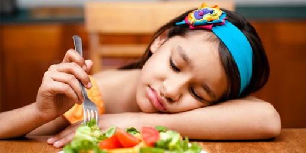

.png)

🩺 1. Underweight (IMT < 18,5 kg/m²)
📌 Penyebab:✅ Kurangnya asupan kalori akibat pola makan yang buruk (Uzogara, 2016)
✅ Gangguan metabolisme seperti hipertiroidisme (Zierle-Ghosh & Jan, 2018)
✅ Penyakit kronis seperti kanker atau gangguan pencernaan (Little et al., 2016)
✅ Gangguan mental seperti anoreksia nervosa atau stres berat (Flores et al., 2013)
📌 Gejala:
⚠ Mudah lelah dan lemah (Golubnitschaja et al., 2021)
⚠ Kulit kering dan rambut rontok (Aronne, 2002)
⚠ Gangguan kesuburan pada wanita (Pasco et al., 2014)
⚠ Risiko osteoporosis karena kekurangan kalsium dan vitamin D (Flegal et al., 2007)

2. Normal Weight (IMT 18,5 – 24,9 kg/m²)
📌 Penyebab:✅ Pola makan yang seimbang dengan aktivitas fisik yang cukup (Flegal et al., 2005)
✅ Keseimbangan energi antara asupan makanan dan pengeluaran energi (Janghorbani et al., 2007)
📌 Gejala:
✔ Tidak memiliki gejala yang berisiko, tetapi tetap perlu menjaga pola makan sehat dan aktivitas fisik (Golubnitschaja et al., 2021)
✔ Risiko metabolik tetap ada jika distribusi lemak tubuh tidak seimbang (Manyanga et al., 2014)
🍔
3. Overweight (IMT 25,0 – 29,9 kg/m²)
📌 Penyebab:✅ Asupan kalori berlebih dibandingkan pengeluaran energi (Flegal et al., 2014)
✅ Kurangnya aktivitas fisik yang menyebabkan penumpukan lemak (Ringbäck Weitoft et al., 2008)
✅ Faktor genetik dan hormonal seperti resistensi insulin (Moser et al., 2019)
📌 Gejala:
⚠ Meningkatnya lemak tubuh, terutama di sekitar perut (Zierle-Ghosh & Jan, 2018)
⚠ Risiko tekanan darah tinggi (Golubnitschaja et al., 2021)
⚠ Napas pendek saat aktivitas fisik (Flegal et al., 2005)
🍟 4. Obesitas Kelas 1 (IMT 30,0 – 34,9 kg/m²)
📌 Penyebab:
✅ Pola makan tinggi lemak dan karbohidrat olahan (Little et al., 2016)
✅ Faktor genetik yang mempengaruhi penyimpanan lemak (Moser et al., 2019)
✅ Stres dan gangguan tidur yang memengaruhi metabolisme (Pasco et al., 2014)
📌 Gejala:
⚠ Peradangan kronis yang meningkatkan risiko penyakit jantung (Zierle-Ghosh & Jan, 2018)
⚠ Resistensi insulin yang dapat menyebabkan diabetes tipe 2 (Uzogara, 2016)
⚠ Nyeri sendi akibat tekanan berlebih pada lutut dan punggung (Aronne, 2002)
🍕 5. Obesitas Kelas 2 (IMT 35,0 – 39,9 kg/m²)
📌 Penyebab:
✅ Kombinasi faktor lingkungan dan genetik (Janghorbani et al., 2007)
✅ Kurang tidur yang meningkatkan hormon lapar (ghrelin) (Flores et al., 2013)
✅ Ketidakseimbangan hormon seperti sindrom metabolik (Flegal et al., 2005)
📌 Gejala:
⚠ Sleep apnea (henti napas saat tidur) (Golubnitschaja et al., 2021)
⚠ Peningkatan kadar kolesterol dan trigliserida (Moser et al., 2019)
⚠ Kesulitan bergerak akibat beban tubuh yang besar (Flegal et al., 2014)
🍩 6. Obesitas Kelas 3 (IMT ≥ 40,0 kg/m²) – Obesitas Parah
📌 Penyebab:
✅ Pola makan tinggi lemak jenuh dan kurang aktivitas (Little et al., 2016)
✅ Gangguan metabolisme berat seperti diabetes tipe 2 (Golubnitschaja et al., 2021)
✅ Depresi dan gangguan psikologis yang berkontribusi terhadap pola makan emosional (Manyanga et al., 2014)
📌 Gejala:
🔥 Tingkat kematian lebih tinggi akibat penyakit kardiovaskular (Flegal et al., 2007)
🔥 Peningkatan risiko kanker (payudara, usus, pankreas) (Moser et al., 2019)
🔥 Gangguan pernapasan parah dan sesak napas berat (Ringbäck Weitoft et al., 2008)
🔥 Depresi dan kecemasan tinggi akibat stigma sosial (Pasco et al., 2014) 📌 Menjaga keseimbangan gizi dan gaya hidup aktif sangat penting untuk kesehatan jangka panjang!
📖 Daftar Pustaka
📌 Uzogara, S. G. (2016). Underweight, the less discussed type of unhealthy weight and its implications: A review. ResearchGate
📌 Zierle-Ghosh, A., & Jan, A. (2018). Physiology, body mass index. Europe PMC
📌 Little, M. et al. (2016). Factors associated with BMI, underweight, overweight, and obesity. Springer
📌 Flores, L. S. et al. (2013). Trends of underweight, overweight, and obesity in Brazilian children and adolescent. SciELO
📌 Flegal, K. M. et al. (2014). Body mass index categories in observational studies of weight and risk of death. American Journal of Epidemiology